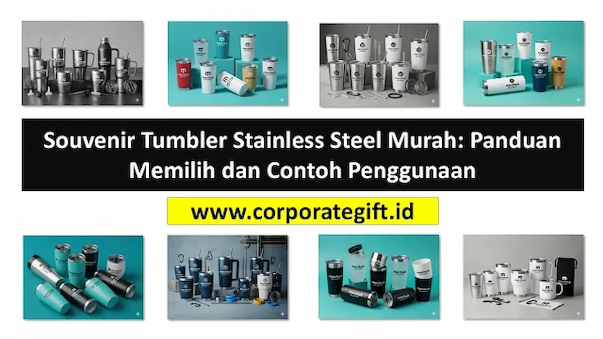

Corporate Gifts ID - Souvenir tumbler stainless steel kini menjadi pilihan utama untuk hadiah perusahaan (corporate gifts), gathering kantor, event promosi, hingga kenang-kenangan pernikahan. Selain awet dan praktis, tumbler jenis ini memiliki kemampuan insulasi termal prima untuk menjaga suhu minuman, ramah lingkungan, serta sangat mudah dikustomisasi sesuai dengan kebutuhan branding maupun tema acara Anda.
Poin Kunci Souvenir Tumbler Stainless Steel:
- Standar Material Food Grade: Wajib menggunakan baja tahan karat SUS304 berkualitas medis yang bebas racun BPA.
- Efisiensi Insulasi Suhu: Teknologi vacuum double wall menjaga suhu panas hingga 8 jam dan dingin hingga 16 jam.
- Ketahanan Fisik Jangka Panjang: Tidak mudah penyok, tahan goresan harian, dan dapat dicuci berulang kali tanpa meninggalkan residu bau.
- Presisi Personalisasi Grafir: Menampilkan detail logo korporat tajam permanen yang tidak mudah terkelupas.
Ulasan ini memberikan panduan lengkap mengenai cara memilih souvenir tumbler stainless steel terjangkau namun berkualitas tinggi, rekomendasi pengaplikasian untuk kantor dan event, serta taktik customisasi visual agar produk tetap memancarkan kesan berkelas.
Keunggulan Utama Souvenir Tumbler Stainless Steel
Tumbler berbahan logam stainless steel menawarkan sederet keunggulan fungsional yang membuatnya jauh mengungguli botol plastik biasa:
- Daya Tahan Tinggi: Material stainless steel jauh lebih kokoh dibandingkan botol plastik. Souvenir ini tahan terhadap benturan ringan dan dapat digunakan secara intensif hingga bertahun-tahun.
- Menjaga Suhu Minuman: Dilengkapi ruang hampa udara (vacuum insulation) yang mencegah rambatan suhu, menjaga kopi tetap panas atau es teh tetap segar menemani jam kerja.
- Tampilan Visual Premium: Permukaan logam dengan finishing doff maupun brushed metal menghadirkan kesan mewah, sangat pas untuk cenderamata segmen eksekutif.
- Higienis dan Mudah Dibersihkan: Logam stainless steel bersifat non-porous sehingga tidak menyerap warna maupun aroma sisa minuman, sangat higienis bagi kesehatan.
- Mendukung Prinsip Keberlanjutan: Mengurangi ketergantungan pada cangkir kertas dan botol air kemasan sekali pakai, sejalan dengan inisiatif eco-friendly.
Tips Memilih Tumbler Stainless Steel Murah Berkualitas
Mendapatkan penawaran harga hemat tidak berarti Anda harus mengorbankan mutu cenderamata kantor. Terapkan strategi seleksi berikut:
- Verifikasi Sertifikasi Food Grade: Pastikan material tabung bagian dalam menggunakan grade SUS304 yang terjamin bebas BPA (BPA-free) dan tahan korosi asam minuman.
- Pilih Vendor Souvenir Berpengalaman: Bekerja sama dengan penyedia spesialis memungkinkan Anda mendapatkan harga grosir tangan pertama (first-hand distributor) dengan hasil cetak rapi.
- Sesuaikan Kapasitas Fungsional: Ukuran volume 450 ml hingga 500 ml adalah standar emas yang paling digemari karena pas dimasukkan ke dalam tas ransel maupun cup holder kendaraan.
- Prioritaskan Desain Tabung Minimalis: Model tabung lurus (straight body) mempermudah proses cetak logo melingkar 360 derajat atau grafir vertikal.
- Minta Sampel Proofing Fisik: Mintalah dummy produk sebelum memulai pesanan massal untuk memastikan kerapatan tutup (leak-proof lid) dan kehalusan tekstur luar.
Contoh Penggunaan untuk Kebutuhan Kantor dan Perusahaan
Souvenir tumbler stainless steel sangat fleksibel dimanfaatkan dalam berbagai program internal kepegawaian maupun kehumasan:
- Welcome Kit Karyawan Baru: Tumbler berlogo resmi menjadi hadiah sambutan onboarding yang menumbuhkan rasa bangga dan kepemilikan sejak hari pertama bergabung.
- Apresiasi Employee of the Month: Memberikan tumbler edisi khusus dengan ukiran grafir nama karyawan berprestasi sebagai simbol penghargaan berkelas.
- Merchandise Acara Internal: Bawaan wajib untuk perlengkapan rapat kerja tahunan (Raker), pelatihan kepemimpinan, atau gathering akhir tahun.
- Corporate Giveaway Klien: Hadiah apresiasi fungsional bagi mitra bisnis strategis yang secara konsisten menampilkan identitas brand di meja kerja mereka.

Personalisasi grafir laser memberikan kontras visual presisi pada lapisan cat coating tumbler stainless steel.
Aplikasi Souvenir Tumbler untuk Acara Publik dan Personal
Selain lingkup korporat, tumbler stainless steel juga menjadi buah tangan favorit untuk berbagai perhelatan skala besar:
- Seminar dan Konferensi Bisnis: Benda fungsional yang langsung dapat diisi ulang di dispenser venue, sekaligus menjadi media promosi jangka panjang sponsor.
- Souvenir Pernikahan Eksklusif: Kenang-kenangan elegan untuk tamu VIP dengan sentuhan inisial monogram pengantin bernuansa modern.
- Program CSR dan Komunitas Hijau: Selaras dengan kampanye pelestarian alam untuk mengurangi sampah plastik sekali pakai.
- Hadiah Pre-Order atau Launching Produk: Pemicu transaksi pembelian produk yang efektif mendongkrak minat konsumen retail.
Strategi Customisasi dan Branding Tumbler Eksklusif
Agar souvenir tumbler memiliki daya pikat maksimal, kombinasikan elemen personalisasi berikut:
- Teknik Grafir Laser (Laser Engraving): Metode paling awet karena mengikis lapisan cat luar sehingga logo logam keperakan di bawahnya terlihat kontras dan tidak bisa terhapus.
- Cetak UV High Resolution: Pilihan tepat jika identitas visual logo perusahaan Anda memerlukan perpaduan warna gradasi yang akurat.
- Personalisasi Nama Individual: Menambahkan nama unik tiap peserta seminar atau tamu undangan untuk menghadirkan ikatan emosional eksklusif.
- Kemasan Hardbox Custom: Lengkapi tumbler dengan kemasan boks tebal berpita emas atau kantong kain serut (fabric pouch) agar impresi saat unboxing terasa mewah.
Tabel Karakteristik Tipe Tumbler Stainless Steel
Berikut rangkuman perbandingan model tumbler stainless steel yang umum digunakan untuk pengadaan cenderamata instansi:
| Tipe Tumbler | Kapasitas & Fitur | Kemampuan Insulasi | Rekomendasi Acara |
|---|---|---|---|
| Tumbler Suhu LED Smart | 500 ml, Display Touch Sensor Tutup | Panas & Dingin hingga 8 Jam | Seminar Nasional, Onboarding Kit |
| Tumbler Vacuum Travel Mug | 450 ml, Gagang Ergonomis & Lid Slide | Panas 6 Jam, Dingin 12 Jam | Hadiah Karyawan Meja Kerja, Raker |
| Tumbler Sporty Hook Carabiner | 600 ml, Gantungan Tutup Portabel | Dingin 16 Jam (Double Wall) | Outbound, Family Gathering Kantor |
| Tumbler Eksekutif Kayu/Bambu | 450 ml, Lapisan Bambu Alami Luar | Panas & Dingin 10 Jam | Gift Set VIP Direksi, CSR Lingkungan |
FAQ: Pertanyaan Seputar Souvenir Tumbler Stainless Steel

Ditulis oleh: Sholikhatun Nikmah
Creative Product Designer & Bespoke Packaging ConsultantDesainer produk dan konsultan pengemasan eksklusif di CorporateGifts.ID. Berpengalaman dalam merancang drinkware kustom, teknik grafir industri, dan kemasan kado korporat berstandar VIP.
Lihat Profil Lengkap & Panduan Lainnya